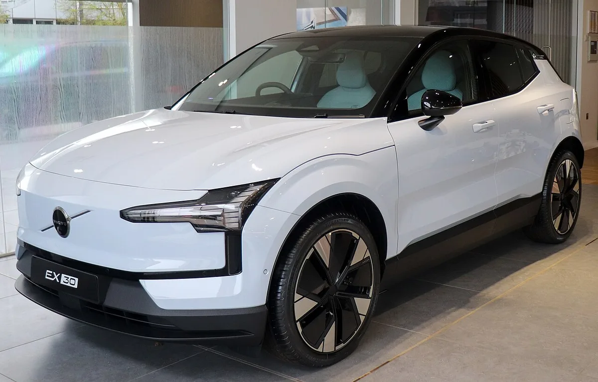
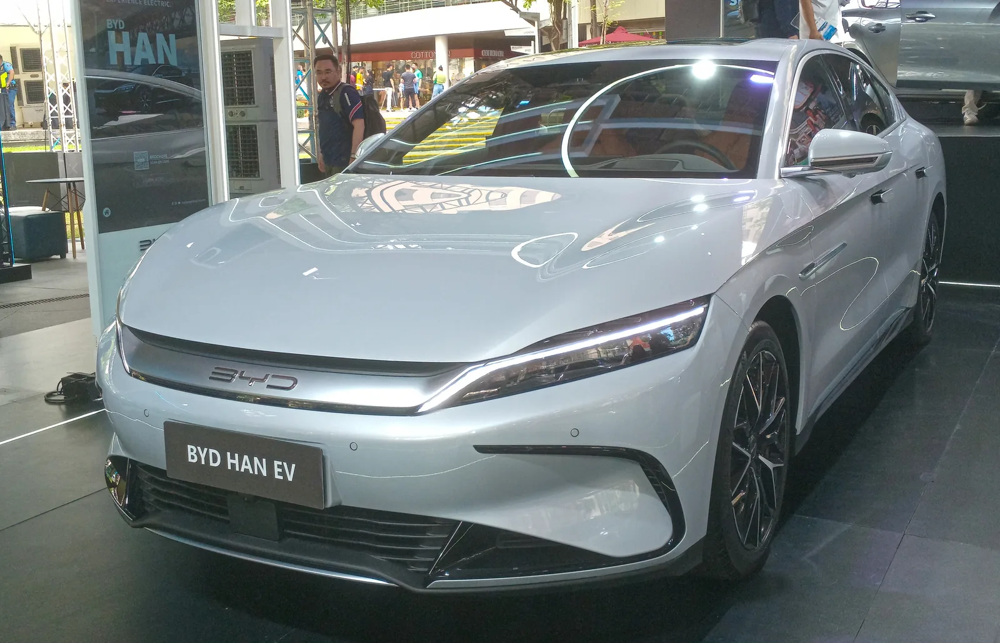
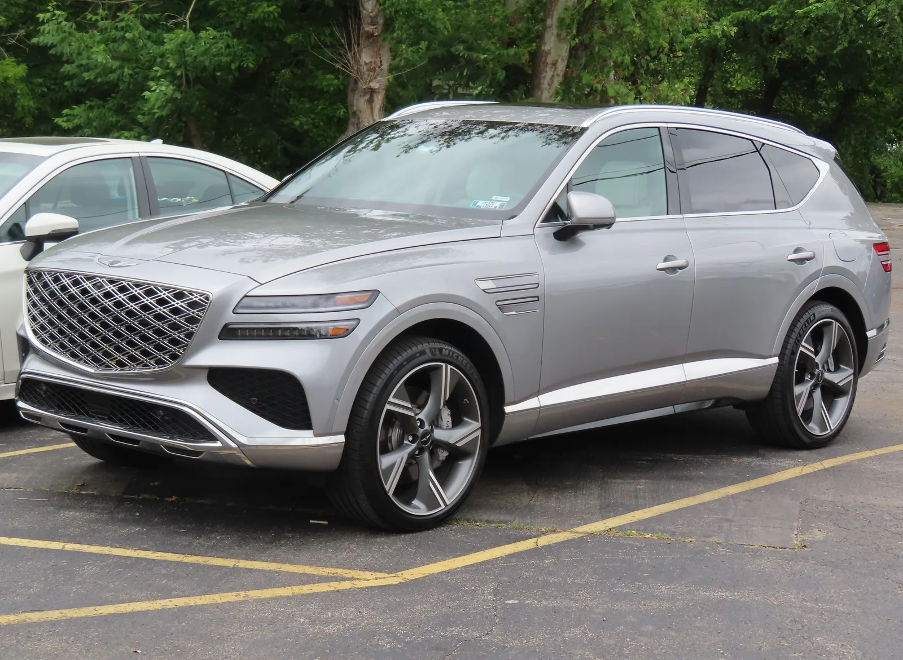
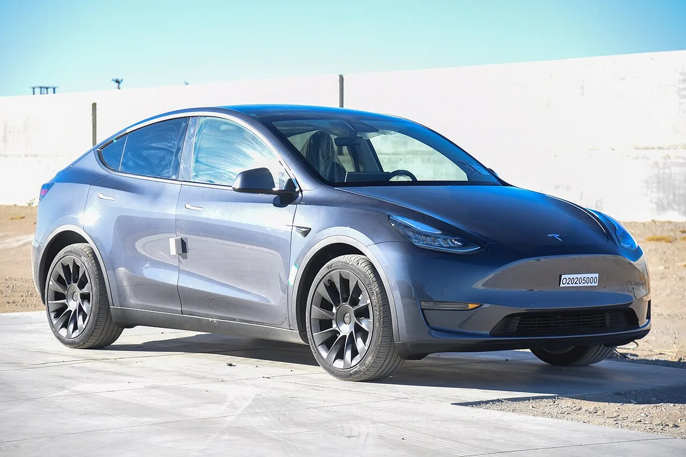
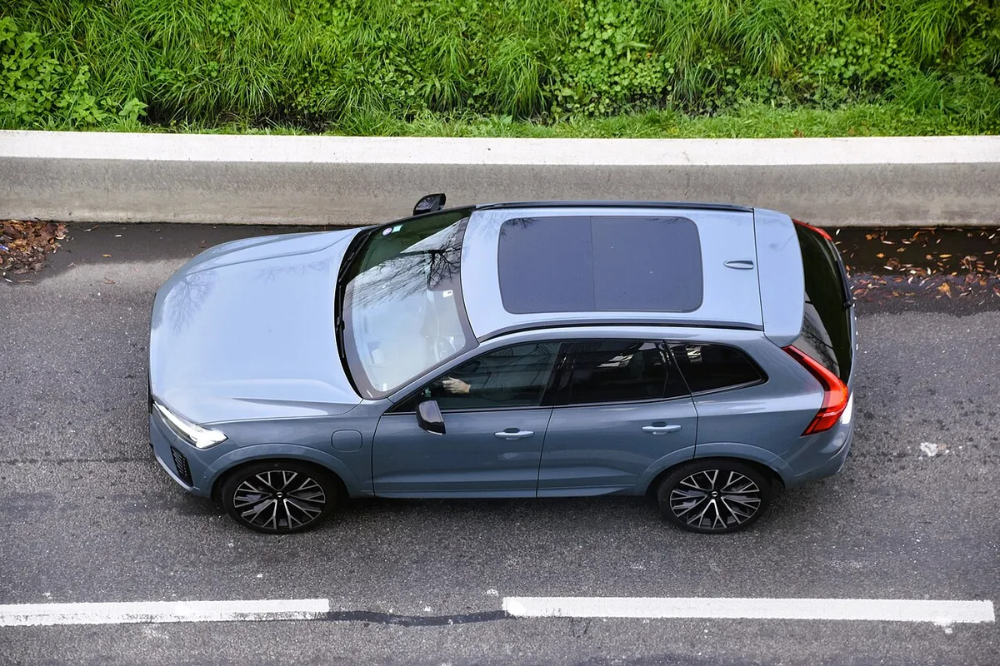

▲ BYD 씨라이언 7. BYD는 컨슈머인사이트 상품성 평가에서 국내 첫 평가 만에 5위에 올랐다 ⓒ BYD
순위표의 맨 위는 익숙했다. 볼보가 852점으로 7년 연속 1위를 지켰다. 그런데 표의 중간이 눈길을 끈다. 처음 평가에 오른 중국 브랜드 BYD가 829점으로 5위에 올랐고, 제네시스(812점)를 17점 앞섰다. 현대차·기아는 산업 평균에도 미치지 못했다.
컨슈머인사이트의 '연례 자동차 기획조사' 중 상품성(TGR) 평가 결과를 오토헤럴드가 29일 정리했다. 앞서 보도된 서비스 만족도와는 결이 다른, '내가 산 차 자체가 얼마나 만족스러운가'를 묻는 조사다.
1. 어떤 조사인가 — 서비스 만족도와 무엇이 다른가
이번 결과의 바탕은 컨슈머인사이트가 매년 실시하는 자동차 기획조사(올해 7월 조사, 전체 표본 94,772명) 가운데 상품성 평가(TGR)다. 신차를 산 지 1년 이내인 소비자에게 자신의 차를 평가하도록 한다. 평가 항목은 외관, 실내, 공간 및 거주성, 성능 및 주행, 안전성, 사양, 전반적 사용성, 운영체계, 경제성 등 9개다.
▲ BYD 씨라이언 7. BYD는 이번 조사에서 국내 첫 평가 만에 5위에 올랐다 ⓒ BYD
| 구분 | 상품성 평가(TGR) | 서비스 만족도(판매·AS) |
|---|---|---|
| 묻는 것 | 차량 자체(외관·실내·성능·안전·사양 등) | 판매 서비스와 AS 만족도 |
| 이번 1위 | 볼보 852점 | 판매서비스 토요타, AS 볼보 등(별도 보도) |
| 주요 변수 | 차의 완성도, 경제성, 운영체계 | 정비 접근성, 응대, 대기 시간 |
같은 볼보가 AS 만족도(858점) 부문에서도 7년 연속 유럽 브랜드 1위였다는 별도 보도가 있다. 다만 이 글이 다루는 것은 차량 자체를 평가한 상품성 순위다.
2. 순위표 — 상위 4개 브랜드는 9점 차
1위와 4위의 차이는 9점에 불과하다. 볼보와 렉서스는 2년 연속 1점 차로 각축 중이다.
| 순위 | 브랜드 | 점수 | 비고 |
|---|---|---|---|
| 1 | 볼보 | 852점 | 7년 연속 1위, 외관·실내·안전성에서 1위 |
| 2 | 렉서스 | 851점 | 1위와 1점 차, 전반적 사용성 1위 |
| 3 | 토요타 | 845점 | 성능·주행, 공간·거주성 1위 |
| 4 | 테슬라 | 843점 | 운영체계·사양 1위, 실내 만족도는 최하위권으로 보도 |
| 5 | BYD | 829점 | 첫 평가, 경제성이 강점 |
| 6 | BMW | 828점 | 오토헤럴드 등 복수 보도 일치 |
| 7 | 제네시스 | 812점 | 국산 브랜드 중 유일하게 산업 평균 이상 |

▲ 볼보 EX30. 볼보는 상품성 평가에서 7년째 1위를 지켰다 ⓒ Vauxford, Wikimedia Commons (CC BY-SA 4.0)
📍 제네시스 812점의 성격
812점은 제네시스 자체의 상품성 점수(7위)다. 겟뉴스는 1위(852점)와 산업 평균의 격차가 40점이라고 전했는데, 이를 계산하면 산업 평균은 약 812점 안팎이 된다(본 기사의 산식). 여기에 오토헤럴드 등이 "국산 브랜드 중 산업 평균 이상은 제네시스뿐"이라고 쓴 점을 더하면, 제네시스는 평균을 간신히 넘긴 수준으로 이해하는 것이 안전하다. 산업 평균의 정확한 소수점 수치는 보도에서 확인되지 않았다. BMW 828점(6위)은 오토헤럴드와 다른 매체 보도가 일치한다.
3. BYD 5위의 정체 — 무엇이 점수를 끌어올렸나
이번 조사에서 가장 큰 화제는 BYD다. 중국산 브랜드가 국내 상품성 평가에서 처음 상위권에 올랐고, BYD는 829점으로 BMW와 제네시스를 제쳤다. 원동력은 경제성이었다. 산업 평균(77.2%)보다 10%포인트 이상 높은 만족도를 기록해 이 항목에서 두드러졌다.

▲ BYD 한 EV. 국내에서는 씨라이언·씰·아토3 등 다양한 모델이 판매되고 있다 ⓒ Ethan Llamas, Wikimedia Commons (CC BY-SA 4.0)
차량 가격 대비 가치, 연료비·유지비 부담 등을 묻는 경제성 항목은 상대적으로 가성비 전략에 강한 브랜드에 유리하다. 반면 실내나 사양, 안전성 같은 항목에서는 상위 유럽·일본 브랜드가 여전히 앞선 것으로 읽힌다. 즉 BYD의 5위는 '가성비 강점이 만든 순위'에 가깝다.
4. 국산차 성적표 — 산업 평균 이하가 다수
이번 조사에서 국산 브랜드 중 산업 평균 이상은 제네시스뿐이었다. 현대차·기아·르노코리아 등은 평균 이하로 분류됐다. 산업 평균 이하 브랜드의 세부 점수는 보도에서 확인되지 않았다.

▲ 제네시스 GV80. 제네시스는 국산 브랜드 중 유일하게 산업 평균 이상을 기록했다 ⓒ Genesis
제네시스는 뒤에서 다룰 초기품질 조사에서는 공동 1위였지만, 상품성 만족도에서는 평균을 간신히 넘겼다.
5. 같은 조사기관의 초기품질에서는 제네시스가 공동 1위
제네시스는 같은 컨슈머인사이트 연례조사의 신차 초기품질(TGW-i)에서는 다른 성적을 냈다. 구입 1년 된 차량 100대당 문제 건수(PPH)에서 제네시스와 렉서스가 85 PPH로 공동 1위에 올랐고, 이는 제네시스가 이 순위 1위에 오른 첫 사례로 전해졌다. 제네시스는 전년보다 4 PPH 개선됐고 렉서스는 19 PPH 악화됐다.
| 순위 | 브랜드 | PPH |
|---|---|---|
| 1 (공동) | 제네시스 | 85 |
| 1 (공동) | 렉서스 | 85 |
| 3 | 한국지엠 | 120 |
| 4 | 토요타 | 123 |
| 5 | BMW | 126 |
| 6 | 현대차 | 128 |
| 7 | 기아 | 130 |
| - | 산업 평균 | 144 |
초기품질은 좋은데 상품성 만족도는 평균 언저리라는 점은 '결함이 적은 차'와 '만족스러운 차'가 다르다는 것을 보여준다. 상품성 평가에는 경제성, 운영체계, 사양 등 소비자 체감 항목이 폭넓게 포함되기 때문이다. (이 순위는 이데일리 보도 기준이며, 순위 표기는 원문 나열 순서를 따랐다.)
6. 항목별로 보면 — 볼보·테슬라·BYD의 색깔
| 브랜드 | 강점 | 약점 |
|---|---|---|
| 볼보 | 외관·실내, 안전성 1위 | - |
| 렉서스 | 전반적 사용성 1위 | - |
| 토요타 | 성능·주행, 공간·거주성 1위 | - |
| 테슬라 | 운영체계·사양 1위 | 실내 만족도 최하위권 |
| BYD | 경제성 1위 (산업 평균 77.2% 대비 10%p 이상) | - |
| 산업 전체 | - | 경제성(평균 77.2%), 운영체계(평균 79.9%) |

▲ 테슬라 모델 Y. 테슬라는 운영체계·사양에서 1위였지만 실내 만족도는 낮았다 ⓒ NHTSA, Wikimedia Commons (Public Domain)

▲ 볼보 XC60. 볼보는 외관·실내와 안전성 항목에서 1위를 기록했다 ⓒ Charles from Port Chester, Wikimedia Commons (CC BY 2.0)
테슬라의 결과는 흥미롭다. 소프트웨어 경험은 최고 수준인데 실내 완성도에서 점수를 잃었다. 업계는 소프트웨어 중심 경쟁 시대에도 실내 마감 같은 기본 품질이 만족도를 좌우한다는 신호로 읽는다.
7. 이 순위를 어떻게 읽어야 하나
✅ 구매 전 참고할 점
· 점수는 실제 오너 평가지만, 브랜드 평균이라 개별 모델 성능과 다를 수 있다
· 상위 4개 브랜드 점수 차는 9점으로 사실상 접전이며, 1~2위 간 1점 차는 유의미한 격차라 보기 어렵다
· BYD 5위는 가성비(경제성) 효과가 크므로, 안전·실내를 중시한다면 항목별 점수를 함께 확인
· 표본이 신차 구매 1년 이내라 장기 내구성·중고차 가치는 반영되지 않음
이번 조사는 국내 시장에서 중국 브랜드가 더는 '저가 도전자'가 아니라 소비자 평가 순위표에 이름을 올린 존재가 됐음을 보여준다. 동시에 국산 완성차가 경제성과 소프트웨어에서 만족도를 끌어올려야 한다는 숙제를 확인해 준 셈이다.
8. 요약
볼보가 852점으로 상품성 평가 7년 연속 1위를 지켰다. 렉서스와 1점 차, 상위 4개 브랜드는 9점 안에서 각축했다.
진짜 반전은 BYD 5위(829점)다. 경제성 항목에서 산업 평균을 10%포인트 이상 웃돌며 제네시스(812점)를 앞섰다.
국산차는 제네시스만 산업 평균 이상이었다. 현대차·기아 등은 평균 이하였고, 산업 전반의 약점은 경제성과 운영체계였다.